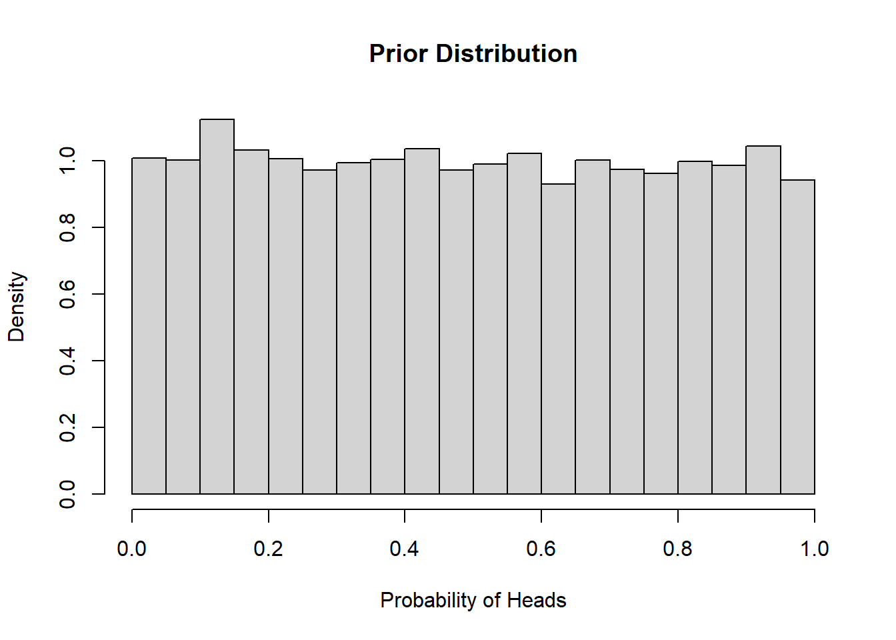
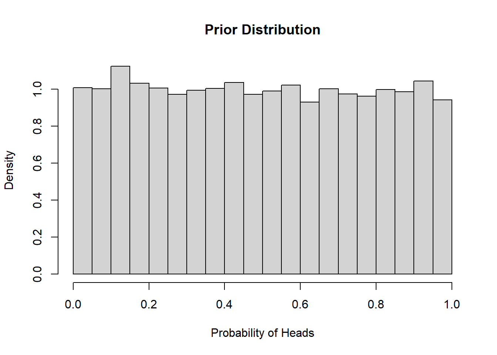

hist(runif(10000,0,1), breaks = 30, freq = FALSE, main = "Prior Distribution",
xlab = "Probability of Heads", ylab = "Density", xlim = c(0, 1))
Suppose we flip a coin a set number of times and count up the number of times a head appears. In this first example, we don’t have any strong belief about the probability that a head will appear. In other words, any probability between 0 and 1 is equally likely to occur. Based on this prior knowledge (or lack thereof), we can visualize the prior distribution of potential probabilities drawing samples from a uniform distribution between 0 and 1.
hist(runif(10000,0,1), breaks = 30, freq = FALSE, main = "Prior Distribution",
xlab = "Probability of Heads", ylab = "Density", xlim = c(0, 1))
Using this prior knowledge and the binomial likelihood function for our data we can generate samples from the posterior distribution.
coin_model_unif <- function(n_flips){
# Simulate coin flips (0 for tails, 1 for heads)
set.seed(5)
coin_flips <- sample(c(0, 1), n_flips, replace = TRUE)
# Likelihood function: Binomial likelihood
likelihood <- function(p) {
sum(dbinom(coin_flips, size = 1, prob = p, log = TRUE))
}
# Prior distribution: Uniform prior
prior <- function(p) {
dunif(p, 0, 1, log = TRUE)
}
# Posterior function: Proportional to the product of prior and likelihood
posterior <- function(p) {
prior(p) + likelihood(p)
}
# Metropolis-Hastings MCMC algorithm
metropolis_hastings <- function() {
samples <- numeric(10000)
current_sample <- runif(1) # Initialize at random value between 0 and 1
for (i in 1:10000) {
# Sample proposed sample from a truncated normal distribution
proposed_sample <- truncnorm::rtruncnorm(1, a = 0, b = 1,
mean = current_sample, sd = 0.1)
# Calculate acceptance probability
acceptance_prob <- exp(posterior(proposed_sample) -
posterior(current_sample))
# Accept or reject proposal
if (runif(1) < acceptance_prob) {
current_sample <- proposed_sample
}
samples[i] <- current_sample
}
return(samples)
}
# Run Metropolis-Hastings MCMC
posterior_samples <- metropolis_hastings()
# Plot posterior distribution
hist(posterior_samples, breaks = 30, freq = FALSE,
main = "Posterior Distribution",
xlab = "Probability of Heads", ylab = "Density", xlim = c(0, 1))
observed_frequency <- sum(coin_flips) / n_flips
abline(v = observed_frequency, col = "red", lwd = 2)
legend("topright", legend = "Observed Frequency of Heads", col = "red", lty = 1,
lwd = 2)
}
coin_model_unif(10)coin_model_unif(100)When we don’t have any prior information, Bayesian inference resembles classical inference. The above estimates can be obtained from maximum likelihood.
If we go into this problem with some prior knowledge about the probability of flipping heads, this knowledge will influence our posterior distribution. If we are pretty confident that the probability is 50%, but we want to leave some room for the possibility that the coin is biased, we might specify a prior distribution that looks like this (beta distribution centered at 0.5).
hist(rbeta(10000,20,20), breaks = 30, freq = FALSE, main = "Prior Distribution",
xlab = "Probability of Heads", ylab = "Density", xlim = c(0, 1))Now we can repeat the steps from earlier to generate samples from the posterior distribution.
coin_model_beta <- function(n_flips){
# Simulate coin flips (0 for tails, 1 for heads)
set.seed(5)
coin_flips <- sample(c(0, 1), n_flips, replace = TRUE)
# Likelihood function: Binomial likelihood
likelihood <- function(p) {
sum(dbinom(coin_flips, size = 1, prob = p, log = TRUE))
}
# Prior distribution: Beta prior centered on 0.5
prior <- function(p) {
dbeta(p, 20, 20, log = TRUE)
}
# Posterior function: Proportional to the product of prior and likelihood
posterior <- function(p) {
prior(p) + likelihood(p)
}
# Metropolis-Hastings MCMC algorithm
metropolis_hastings <- function() {
samples <- numeric(10000)
current_sample <- runif(1) # Initialize at random value between 0 and 1
for (i in 1:10000) {
# Sample proposed sample from a truncated normal distribution
proposed_sample <- truncnorm::rtruncnorm(1, a = 0, b = 1,
mean = current_sample, sd = 0.1)
# Calculate acceptance probability
acceptance_prob <- exp(posterior(proposed_sample) -
posterior(current_sample))
# Accept or reject proposal
if (runif(1) < acceptance_prob) {
current_sample <- proposed_sample
}
samples[i] <- current_sample
}
return(samples)
}
# Run Metropolis-Hastings MCMC
posterior_samples <- metropolis_hastings()
# Plot posterior distribution
hist(posterior_samples, breaks = 30, freq = FALSE,
main = "Posterior Distribution",
xlab = "Probability of Heads", ylab = "Density", xlim = c(0, 1))
observed_frequency <- sum(coin_flips) / n_flips
abline(v = observed_frequency, col = "red", lwd = 2)
legend("topright", legend = "Observed Frequency of Heads", col = "red", lty = 1,
lwd = 2)
}
coin_model_beta(10)coin_model_beta(100)We can see that the prior has a lot of influence on the posterior distribution when we only flip the coin 10 times, but is less influential when we have more data and the observed frequency is closer to 50%.
library(tidyverse)
library(here)
library(brms)For this example, we are going to model the relative abundance of blue-spotted salamander larvae in wetlands. We are interested in the effects of canopy cover, day of year, year, and study site. We we use a Poisson distribution with a log-link to model counts of larvae in wetlands and use an offset term to account for differences in the number of samples per wetland and the size of the wetland relative to maximum inundation. We will start with a frequentist approach using the glm() function in R.
vp_amphibs <- readRDS(here("data/vp_amphibs.rds")) %>%
mutate(year = factor(year)) %>%
rename(site = sites)
vp_AL <- vp_amphibs %>%
filter(species == "BS") %>%
rowid_to_column()
mod_freq <- glm(count~
scale(jday)+
scale(canopy)+
year+
site+
offset(log(samples/proparea)),
data=vp_AL,
family="poisson")
summary(mod_freq)
Call:
glm(formula = count ~ scale(jday) + scale(canopy) + year + site +
offset(log(samples/proparea)), family = "poisson", data = vp_AL)
Coefficients:
Estimate Std. Error z value Pr(>|z|)
(Intercept) -1.01311 0.09254 -10.948 < 2e-16 ***
scale(jday) -0.46280 0.03288 -14.075 < 2e-16 ***
scale(canopy) -0.08285 0.03441 -2.408 0.0160 *
year2020 -0.11099 0.07049 -1.575 0.1154
siteGB2 0.81252 0.09970 8.150 3.64e-16 ***
siteGB7 0.30632 0.11010 2.782 0.0054 **
siteGB8 -16.48719 359.62353 -0.046 0.9634
siteGB9 -0.27215 0.12370 -2.200 0.0278 *
---
Signif. codes: 0 '***' 0.001 '**' 0.01 '*' 0.05 '.' 0.1 ' ' 1
(Dispersion parameter for poisson family taken to be 1)
Null deviance: 2208.4 on 108 degrees of freedom
Residual deviance: 1503.8 on 101 degrees of freedom
AIC: 1857.9
Number of Fisher Scoring iterations: 13Most of these parameter estimates seem reasonable, but the effect size and standard error for the site GB8 variable are quite large. If we look at the total counts of larvae for each site we can see why.
vp_AL %>%
group_by(site) %>%
summarise(total_count = sum(count)) %>%
ggplot(aes(x = site, y = total_count)) +
geom_bar(stat = "identity") +
theme_bw()This is what is known as complete separation, when the outcome variable is seemingly perfectly predicted by the predictor. Site GB8 has only two wetlands and blue-spotted salamander larvae were not found in either. Complete separation isn’t always an issue, but it can lead to errors in other parameter estimates and make model comparison difficult.
Using a Bayesian approach, we can make use of weak priors to keep our make sure our parameter estimates are realistic.
prior <- brms::set_prior("normal(0,1)", class = "b")
# Plot normal distribution
tibble(x = seq(-4, 4, length.out = 1000)) %>%
mutate(y = dnorm(x,0,1)) %>%
ggplot(aes(x = x, y = y)) +
geom_line() + # Plot the normal distribution curve
labs(title = "Normal Distribution",
x = "x",
y = "Density") +
theme_bw()What does this prior mean? The GB8 variable takes a value of 1 if the site is GB8 and 0 if it is not. Based on the prior distribution for GB8 above, we think the effect has a ~95% chance of being between -2 and 2. Since the expected count of salamander larvae is modelled with a log-link, this range of effects corresponds to a change in expected count between a factor of exp(-2) = 0.1 and a factor of exp(2) = 7.4, which seem reasonable for this system.
If we have a lot of data for GB8, the prior won’t have a huge impact on our posterior distribution. If we don’t have a lot of data, then the prior will make sure we don’t explore unreasonable values for the posterior.
We will now use the brm function to specify our model. Note that the syntax is similar to glm(), but we now include some extra information.
mod_bayes <- brms::brm(count~
scale(jday)+
scale(canopy)+
year+
site+
offset(log(samples/proparea)),
data=vp_AL,
family="poisson",
prior = prior, ### our normal(0,1) prior
iter = 2000, ### number of samples to draw from the posterior
warmup = 1000, ### number of samples to discard from the start
chains = 2, ### number of independent samples to draw
cores = 2) ### number of processing cores to use on computerCompiling Stan program...Start samplingNow we can compare parameter estimates between the frequentist and Bayesian approaches
# Extract parameter estimates
glm_coefs <- broom::tidy(mod_freq) %>%
mutate(type = "freq") %>%
select(term, estimate, std.error, type)
brms_coefs <- as.data.frame(fixef(mod_bayes)) %>%
rename(estimate = Estimate,
std.error = Est.Error) %>%
mutate(term = glm_coefs$term,
type = "bayes") %>%
select(term, estimate, std.error, type)
rbind(glm_coefs, brms_coefs) %>%
mutate(estimate = round(estimate,2),
std.error = round(std.error,2)) %>%
pivot_wider(names_from = "type", values_from = c("estimate","std.error")) %>%
select(term, estimate_freq, std.error_freq,
estimate_bayes, std.error_bayes) %>%
kableExtra::kbl(caption = "Comparison of Model Parameters",
col.names = c("Term","Estimate", "Std. Error","Estimate", "Std. Error")) %>%
kableExtra::add_header_above(c("","Frequentist"=2,"Bayesian"=2))| Term | Estimate | Std. Error | Estimate | Std. Error |
|---|---|---|---|---|
| (Intercept) | -1.01 | 0.09 | -1.03 | 0.09 |
| scale(jday) | -0.46 | 0.03 | -0.46 | 0.03 |
| scale(canopy) | -0.08 | 0.03 | -0.09 | 0.03 |
| year2020 | -0.11 | 0.07 | -0.11 | 0.07 |
| siteGB2 | 0.81 | 0.10 | 0.83 | 0.10 |
| siteGB7 | 0.31 | 0.11 | 0.32 | 0.11 |
| siteGB8 | -16.49 | 359.62 | -2.80 | 0.53 |
| siteGB9 | -0.27 | 0.12 | -0.25 | 0.12 |
The parameter estimates and standard deviations are similar between the two approaches, but the parameter estimate and standard deviation for GB8 are smaller in magnitude.
Lastly we’ll explore some diagnostics:
summary(mod_bayes) Family: poisson
Links: mu = log
Formula: count ~ scale(jday) + scale(canopy) + year + site + offset(log(samples/proparea))
Data: vp_AL (Number of observations: 109)
Draws: 2 chains, each with iter = 2000; warmup = 1000; thin = 1;
total post-warmup draws = 2000
Regression Coefficients:
Estimate Est.Error l-95% CI u-95% CI Rhat Bulk_ESS Tail_ESS
Intercept -1.03 0.09 -1.22 -0.85 1.00 1064 1380
scalejday -0.46 0.03 -0.53 -0.40 1.00 1509 1499
scalecanopy -0.09 0.03 -0.15 -0.01 1.00 1714 1183
year2020 -0.11 0.07 -0.24 0.02 1.00 1718 1565
siteGB2 0.83 0.10 0.64 1.02 1.00 892 1128
siteGB7 0.32 0.11 0.11 0.54 1.00 939 1275
siteGB8 -2.80 0.53 -3.94 -1.84 1.00 1511 1368
siteGB9 -0.25 0.12 -0.49 -0.03 1.00 993 1364
Draws were sampled using sampling(NUTS). For each parameter, Bulk_ESS
and Tail_ESS are effective sample size measures, and Rhat is the potential
scale reduction factor on split chains (at convergence, Rhat = 1).plot(mod_bayes, variable = c("b_scalecanopy", "b_siteGB8"))